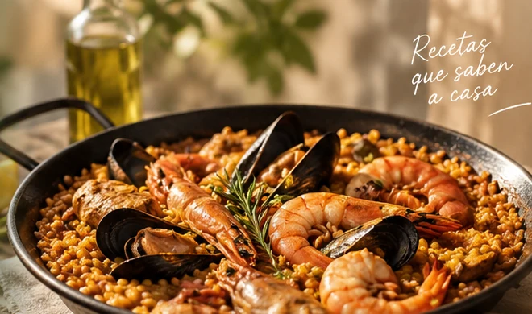

Recetas de raíz
Cocina con raíces.
Recetas sencillas, honestas y fáciles de seguir. Clásicos de siempre, cocina mediterránea y platos que también nacen en casa.

RECETAS DE VERDAD52recetas para cocinar
Claropasos fáciles de seguir
De raízclásicos y cocina diaria
52ideas para repetir
Recetas para cocinar de verdad · sencillas, claras y sin rodeos
Explora